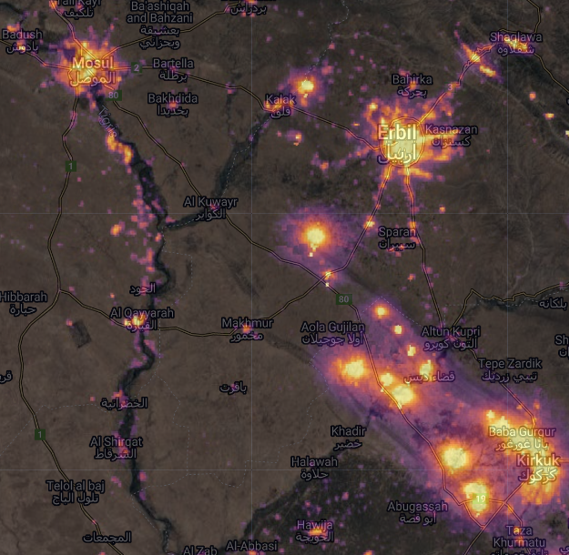

War at Night
Data
Satellite images of Syria taken at night capture a subtle trace left by human civilization: lights. Apartment buildings, street lights, highways, power plants – all are illuminated at night and can be seen from space. Researchers often use these nighttime lights signatures to track development; as cities grow, villages receive power and infrastructure is built, areas emit more light. But this works both ways. As cities are demolished, villages burned and highways cutoff, they stop emitting lights.
In this tutorial, we’ll use satellite images of Iraq taken at night to track the destruction caused by the fight against the Islamic State. We’ll use the VIIRS nighttime lights dataset, which is a collection of satellite images taken by the Visible Infrared Imaging Radiometer Suite (VIIRS) on the Suomi NPP satellite. VIIRS is a sensor that can detect light in the visible and infrared spectrum, and is capable of taking images at night. A link to the GEE code for this section can be found here.
Pre-Processing
First, let’s start by importing a few useful packages written by Gennadii Donchyts. We’ll use utils and text to annotate the date of each image on the timelapse. We’ll also define an Area of Interest (AOI), which is just a rectangle. You can do this manually by clicking the drawing tools in the top left. I’ve drawn an AOI over the area covering Mosul, Irbil and Kirkuk in Northern Iraq.
var utils = require("users/gena/packages:utils");
var text = require("users/gena/packages:text");
// define the Area of Interest (AOI)
var AOI = ee.Geometry.Polygon(
[[[42.555362833405326, 36.62010778397765],
[42.555362833405326, 35.18296243288332],
[44.681217325592826, 35.18296243288332],
[44.681217325592826, 36.62010778397765]]])
// start and end dates for our gif
var startDate = '2013-01-01';
var endDate = '2018-01-01';
// a filename for when we export the gif
var export_name='qayyarah_viirs'
// A palette to visualize the VIIRS imagery. This one is similar to Matplotlib's "Magma" palette.
var viirs_palette = [
"#000004",
"#320a5a",
"#781b6c",
"#bb3654",
"#ec6824",
"#fbb41a",
"#fcffa4",
];
// Visualisation parameters for the VIIRS imagery, defining a minimum and maximum value, and referencing the palette we just created
var VIIRSvis = { min: -0.1, max: 1.6, palette: viirs_palette };Next, we’ll load the VIIRS nighttime lights imagery. We want to select the avg_rad band of the image collection, and filter blank images. Sometimes, we get blank images over an area in VIIRS if our AOI is on the edge of the satellite’s imaging swath. We can filter these images, similarly to how we filter for cloudy images in Sentinel-2:
var VIIRS= ee.ImageCollection("NOAA/VIIRS/DNB/MONTHLY_V1/VCMCFG")
.select('avg_rad')
// Calculate the sum of the 'avg_rad' band within the AOI
.map(function(image) {
var blank=image.reduceRegions({ // reduceRegions is a function that allows us to reduce the values of a band within a
collection: AOI, // geometry. In this case, we're reducing the values of the 'avg_rad' band within the AOI
reducer: ee.Reducer.sum(), // We're using the sum reducer, which will sum the values of the 'avg_rad' band
scale: 10}) // We're reducing the values of the 'avg_rad' band at a scale of 10m
.first() // We only want the first element of the collection, which is the sum of the 'avg_rad' band within the AOI
.get('sum') // We want the value of the 'sum' property, which is the sum of the 'avg_rad' band within the AOI
// For each image, define a property 'blank' that stores the sum of the 'avg_rad' band within the AOI.
// We're also going to take a base 10 log of the image-- this will help us visualize the data by dampening extreme values
return image.set('blank', blank).log10().unmask(0)
})
// Now, we can filter images which are fully or partially blank over our AOI
.filter(ee.Filter.gt('blank', 10))
// Finally, we filter the collection to the specified date range
.filterDate(startDate, endDate)
Let’s have a look at the first image in the collection to make sure everything’s looking right. We’ll set the basemap to satellite and center our AOI:
Map.setOptions('HYBRID')
Map.centerObject(AOI)
Map.addLayer(VIIRS.first(),VIIRSvis,'Nighttime Lights')
If we decrease the opacity of the VIIRS layer, we can see the cities of Mosul, Erbil and Kirkuk shining brightly at night. We can also see a string of bright lights between Kirkuk and Erbil – these are methane flares from oil wells.
Analysis
Having pre-processed the VIIRS imagery, we can now define a function gif that will take:
- An image collection (
col, in this case the nighttime lights imageryVIIRS) - Visualization parameters (
col_vis, in this caseVIIRSvis) - An Area of Interest
AOI
The function will then return a timelapse.
var gif = function (col, col_vis, AOI) {
// Define the date annotations to be printed in the top left of the gif in white
var annotations = [
{
textColor: "white",
position: "left",
offset: "1%",
margin: "1%",
property: "label",
// Dynamically size the annotations according to the size of the AOI
scale: AOI.area(100).sqrt().divide(200),
},
];
// Next, we want to map over the image collection,
var rgbVis = col.map(function (image) {
// Get the date of the image and format it
var start = ee.Date(image.get("system:time_start"));
var label = start.format("YYYY-MM-dd");
// And visualize the image using the visualization parameters defined earlier.
// We also want to set a property called "label" that stores the formatted date
return image.visualize(col_vis).set({ label: label });
});
// Now we use the label property and the annotateImage function from @gena_d to annotate each image with the date.
rgbVis = rgbVis.map(function (image) {
return text.annotateImage(image, {}, AOI, annotations);
});
// Define GIF visualization parameters.
var gifParams = {
maxPixels: 27017280,
region: AOI,
crs: "EPSG:3857",
dimensions: 640,
framesPerSecond: 5,
};
// Export the gif to Google Drive
Export.video.toDrive({
collection: rgbVis, // the image collection
description: export_name, // the name of the file
dimensions: 1080, // the dimensions of the gif
framesPerSecond: 5, // the number of frames per second
region: AOI, // the area of interest
});
// Print the GIF URL to the console.
print(rgbVis.getVideoThumbURL(gifParams));
// Render the GIF animation in the console.
print(ui.Thumbnail(rgbVis, gifParams));
};Ok that was a pretty big chunk of code. But the good news is that we basically never have to touch it again, since we can just feed it different inputs. For example, if I want to generate a gif of night time lights over a different area, it’s as simple as dragging the AOI. If I want to look at a different time period, I can just edit the startDate and endDate variables. And if I want to visualize an entirely different type of satellite imagery – Sentinel-1, Sentinel-2, or anything else, all I have to do is change the image collection (col) and visualization parameters (col_vis) variables. Now, let’s look at some timelapses.
The Fall of Mosul
The function returns a timelapse of nighttime lights over Northern Iraq:
gif(VIIRS, VIIRSvis, AOI);
This timelapse gives a play-by-play of one of the most important campaigns in the war against the Islamic State. In the first few frames, Mosul is under the control of the Kurdistan Regional Government (KRG). In the summer of 2014, ISIS captures the city, and power is cut off. Mosul and many villages along the Tigris river are plunged into darkness. In 2015, the front line in the campaign to retake the city emerges around Mosul, advancing in 2016 and 2017. Mosul is eventually retaken by the KRG in 2017, after which it brightens once again as electricity is restored.
The Qayyarah Fires
Farther south, there is an interesting detail. Above the “h” in “Qayyarah”, a bright set of lights emerges just before Mosul is recaptured, around December 2016. Fleeing Islamic State fighters set fire to the Qayyarah oilfields, which burned for months.
Using the VIIRS data we’ve already loaded, we can further analyze the effect of the conflict using a chart. First, let’s define two rectangles (again, you can draw these) over Mosul and Qayyarah:
var mosul = ee.Feature(
ee.Geometry.Polygon(
[[[43.054977780266675, 36.438274276521234],
[43.054977780266675, 36.290642221212416],
[43.24792516796199, 36.290642221212416],
[43.24792516796199, 36.438274276521234]]], null, false),
{
"label": "Mosul",
"system:index": "0"
}),
qayyarah = ee.Feature(
ee.Geometry.Polygon(
[[[43.08240275545117, 35.8925587996721],
[43.08240275545117, 35.77899970860588],
[43.26642375154492, 35.77899970860588],
[43.26642375154492, 35.8925587996721]]], null, false),
{
"label": "Qayyarah",
"system:index": "0"
})
// Let's put these together in a list
var regions=[qayyarah, mosul]Once we’ve got the rectangles, we can make a chart that will take the mean value of the VIIRS images in each rectangle over time:
var chart =
ui.Chart.image
.seriesByRegion({
imageCollection: VIIRS,
regions: regions,
reducer: ee.Reducer.mean(),
seriesProperty:'label'
}).setOptions({
title: 'Nighttime Lights'
});
print(chart)
We can clearly see Mosul (the red line) darkening in 2014 as the city is taken by ISIS. During this period the Qayyarah oil fields are, as we might expect, quite dark. All of a sudden in 2016 Qayyarah becomes brighter at night than the city of Mosul ever was, as the oilfields are set on fire. Then, almost exactly when the blaze in Qayyarah is extinguished and the area darkens (i.e. when the blue line falls back to near zero), Mosul brightens once again (i.e. the red line rises) as the city is liberated.